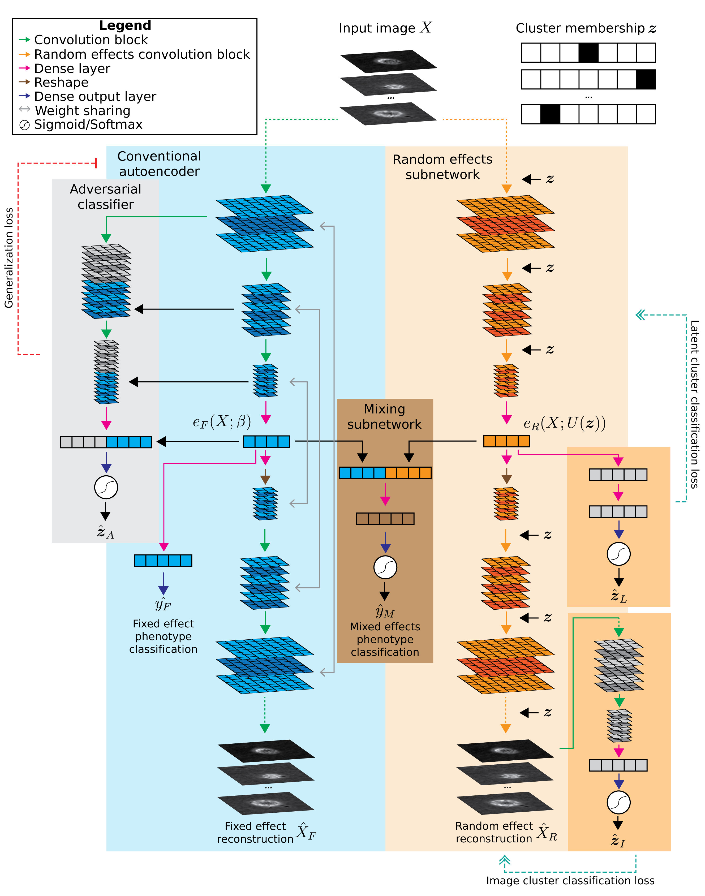

Live cell image compression and classification#
This application of MEDL uses an autoencoder-classifier (AEC) to compress cell images into a vector representation while also classifying their phenotype.
Images of cells from melanoma patient-derived xenografts (PDXs) were provided by the Danuser lab. The dataset includes 7 PDXs, with 3 labeled as “high metastatic efficiency” and 4 labeled as “low metastatic efficiency” based on experimental observations. The classification task is to predict is whether each cell came from a PDX with high or low metastatic efficiency. Cells were imaged across several days, which creates a batch effect
Data preparation#
create_dataset.py selects images from 7 PDXs across several dates (batches)
for inclusion, then divides into training/validation/test sets. The remaining
dates are heldout as “unseen batches” to evaluate model generalization. The
images and associated labels are saved as compressed .npz files to be loaded
into memory when training models. (Unfortunately, disk read speed is too slow to
efficiently stream .png files from disk during training using an
ImageDataGenerator.)
Model training#
Call main.py to train a desired model type. Model types include:
Conventional AEC: no explicit modeling of fixed or random effects
Domain adversarial AEC: uses domain adversarial learning to enforce learning of batch-agnostic features, i.e. fixed effect features
Domain enhancing (random effects) AEC: emphasizes batch-specific features, i.e. random effect features
Mixed effects AEC: Combines components of the domain adversarial and domain enhancing models. (work in progress)
See model details below.
For example, to train the conventional AEC::
python main.py --model_type conventional --output_dir <output location>
--training_metadata <datadir>/data_train.csv
--training_data <datadir>/data_train.npz
--val_metadata <datadir>/data_val.csv
--val_data <datadir>/data_val.npz
If the data path arguments are not given, it will default to some preset
locations (see python main.py --help). Note that all paths can be given
relative to the RESULTSDIR and DATADIR global variables set in the
settings.py file. They will automatically be expanded.
Next, to evaluate the trained model on test data::
python main.py --model_type conventional --output_dir <output location> --do_test
--test_metadata <datadir>/data_test.csv --test_data <datadir>/data_test.npz
--load_weights_epoch <epoch from which to load weights>
Similarly, to evaluate on data from heldout batches::
python main.py --model_type conventional --output_dir <output location> --do_test
--test_metadata <datadir>/data_unseen.csv --test_data <datadir>/data_unseen.npz
--load_weights_epoch <epoch from which to load weights>
Utilities#
To run inference on trained models and obtain latent representations,
reconstructions, or classifications, use model_tools.py. See python
model_tools.py --help for arguments.
For example, to compute classification predictions on a trained conventional AEC::
python model_tools.py --image_data <datadir>/data_*.npz
--image_list <datadir>/data_*.csv
--weights <weights path.h5>
--model_type conventional
--classifications <outputpath.csv>
Use the --latents or --reconstructions arguments to output latent
representations or reconstructions. Classifications are saved as .csv files,
latents as .pkl Pandas DataFrame files, and reconstructions as .npy files.
Inferring the cluster membership design matrix for unseen batches#
To fully utilize the random effects AEC on batches not seen during training,
we need to infer the design matrix Z for images from these unseen batches.
infer_design_matrix.py trains a convolutional classifier that predicts Z from
from each image, using training data from the seen batches. It then predicts Z
for the unseen batch data. Since the classifier uses a multi-class softmax
output, the resulting inferred Z will contain the probabilistic weighting of
similar seen sites for each unseen batch image.
Model details#
Conventional AEC#
--model_type conventional
A classic convolutional neural network corresponding to the blue area in diagram above.
Domain adversarial CNN#
--model_type adversarial
Domain adversarial AEC which adds an adversarial classifier (gray area in diagram). This adversary tries to predict the cluster membership of each sample based on the layer outputs of the main CNN. At the same time, the main AEC tries to increase the crossentropy of the adversary by learning features that are not predictive of cluster membership.
Mixed effects AEC#
--model_type mixedeffects
Mixed effects AEC which builds upon the domain adversarial AEC. A mirrored random effects subnetwork (orange area in diagram) is added to learn cluster-specific features. It takes the cluster membership $`z`$ as an input and applies a cluster-specific scalar and cluster-specific bias to the output of each convolutional block.